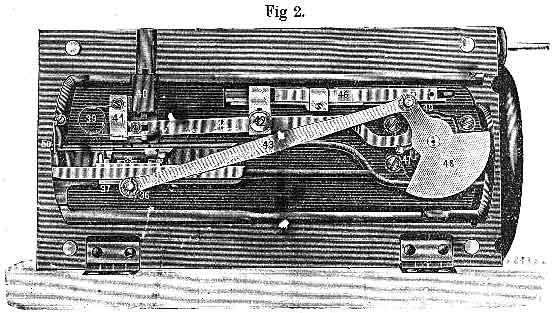
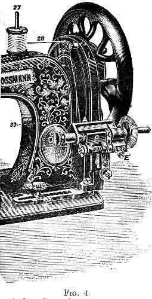

The following directions have been proved by experience to be quite sufficient to enable anyone to acquire a perfect knowledge of the management of this machine without any personal instruction.
The best plan for the learner to pursue is to carry out practically on the machine, one by one, all th instructions given in each paragraph, whilst another person reads them aloud. Never be in a hurry, but master one paragraph thoroughtly before proceeding to the next.
The machines are always sent out properly adjusted, with needle threaded, and quite ready for use, but to prevent accidents to the working parts, the fly wheel is disconnected from the shaft in the arm. To connect the fly-wheel, push inwards the steel connector (a), which you will find on the outside of the fly-wheel.
Great care must be taken that none but Frister and Rossmann's Needles, which are of the very best quality and finish, are used. See that F & R TRADE MARK is on each packet, as these are the only genuine needles made for F & R Machines.
We mention this as we find much inferior needles, which do not work properly, are being offered for sale, and cause users of F & R's Machines a great amount of unnecessary trouble.
To set the needle, turn the fly-wheel slowly towards you, until the needle shaft, No 21 is at its highest point. Now loosen screw 11, which secures the needle, by turning it to the left.
Take the needle between the thumb and forefinger of the left hand, and push it, from below, into the slot in needle-yoke 12, until it touches the needle-stop, (which prevents the needle from being set too high), taking care that the long groove in the needle is turned towards the operator. Screw the needle firmly in the position, care being taken that it ascends and descends exactly in the middle of the needle-plate hole.
If the needle is set too low, stitches are dropped, or the needle may be broken. It will thus be seen that an exact adjustment of the needle is of the highest importance.
When the machine is continually in use, the position and motion of the needle should be examined daile; if the point is blunt, or rough, a fresh needle should be used.
It is especially to be recommended that needle and thread always match one another -- i.e., that the latter is just thick enough to completely fill up the groove of the needle when it passes through the work, and we therefore give you below a table shewing the numbers of the needles and the cottons to be used with same.
| Sizes of
MEDIUM -- |
Needles ---FAMILY |
Class of
Work to Sew |
Size of
Cotton |
| 00 |
9 |
Very thin Muslin, Cambrics etc. |
100 to 200 Cotton |
| 0 |
10 |
Linens, very fine Calicos and
Silk Goods |
80 to 100 Cotton |
| 1 |
11 |
Muslins, Silks and general Domestic
Goods |
60 to 100 Cotton |
| 2 |
12 |
Sheetings, Shirtings, Bleached
Calicos, etc. |
40 to 80 Cotton |
| 3 |
13 |
Light Woollen Goods, heavy Silks,
Seaming, etc. |
30 to 50 Cotton |
| 4 |
14 |
Heavy Calicos, Woollen Goods,
Cloaks, Mantles |
30 to 40 Cotton |
| 5 |
-- |
Tickings, Heavy Woollens and
heavy Clothing generally |
20 to 40 Cotton |
The thread in the shuttle should be the same number as, or finer than the upper thread.
NOTE -- Glazed threads should not be used, but always good cotton, such as Chadwick's.
When unpacking the machine, the manner in which the needle is threaded should be carefully noted, so that it may afterwards be done in the same way. Proceed as folows:-- The reel which contains the upper thread is put on the holder at 26; its thread is passed first over the hook No. 19, and then between the two tension disks 16 from beneath; next over the hook No.18; then take cotton in both hands, the ends being in the right hand, and pass it behnd the small hook attached to the needle-yoke (No 10) then with the left hand guide the cotton so that, when pulled with the right hand, it falls into the slit in the needle-yoke, and, lastly, pass it through the eye of the needle from the front. About an inch and a half of the thread should lie on the needle-plate.
When winding the bobbins, disconnect the upper flywheel from the machine proper by pulling out the steel connector, which you will find on the outside of the flywheel; this done, the upper fly-wheel can be driven without moving the whole mechanism. The connection can be reestablished by pushing in the steel connector. Place the reel on the spindle nearest the fly-wheel, pass the cotton, as it comes from the reel, through the eyelet and between the two tension disks on the band-guard, then under the bar (a), and into the hole at the end of the bobbin from the inside; now press down the gate (b), and insert the bobbin in the winder so that the hole at the end fits over the pin (c); draw out the piston (d), and place the other end of the bobbin in position; then push firmly the knob on winder at point (c), and that will connect the winder with the fly-wheel, and proceed to wind the bobbin by turning the handle of the machine. If neede, the bobbin can be wound whilst the machine is being worked, as it requires no attention and disconnects itself when full.
1. Hold the Shuttle with its pointed end towards you (as above)
2. Place the end of the bobbin not having the hole into the spring centre (a), and gently press the other end down the groove into the socket at the blunt end (b). Hook the thread over the projecting end of the bar (c) from right to left. Then guide it into the slit on the right (d), and from there to the slit (e). Pull the cotton into the slit (e), so that it is taken behind the outside spring, and the Shuttle is then ready for use.
3. The tension of the shuttle is obtained by turning the little screw (g) by means of the smaller screw-driver given with the machine; the deeper it is screwed the tighter the tension will be. A half-turn at a time is advisable.
Caution -- Do not allow lint or dust to accumulate in the shuttle or under the shuttle-tension spring, as any foreign substance inside the shuttle will prevent the proper action of the bobbin, and under the tension spring, will render the shuttle tension inoperative.
Both threads having been properly arranged, observe the following directions:-- Place the shuttle in its travelling guide, or carrier, so that its point is towards the needle and so that its spring shows when the shuttle slide is open; pull the thread out about two inches as shown in figure 5; draw the upper thread about two inches through the needle; hold the end of the upper thread with the left hand, whilst with the right you turn the upper fly-wheel ONCE ROUND, so that the needle descends and ascends again to its highest position, by which means the under thread is drawn through the needle-plate in a loop, which must be drawn out; and, not forgetting to raise the presser, put both threads behind. This being done, place the work under the presser, lower the latter, then set the machine regularly in motion, guiding the work, but taking care not to pull or push it, as the needle might break. In passing over hard parts, or across seams, sew slowly, and turn the upper fly-wheel carefully with the hand, so as not to bend or break the needle.
When you wish to remove the work, let the needle be at its highest point; raise the presser so that the cotton mayt run freely through the eye of the needle without bending it, and draw the material awya towards the back of the machine, pulling it at the same time slightly outwards to the left. Careful observance of this rule will prevent the breaking of many needles.
Should the under-thread break in removing the work, take the shuttle out and loosen the tension by slightly unscrewing the little screw g (see Fig 5). Then draw the thread out an inch or two and proceed as before.
At every stitch the work is moved is moved forward by the feed. The length of stitch may be regulated, as required, by means of the thumb-screw 32, near the bobbin-winder. If this is pushed to the right the stitch is made larger; if pushed to the left, smaller. A few trials show the results immediately. Secure the screw as soon as the stitch is adjusted to the required size.
The tension of the upper thread demands especial attention, because on it depends the perfection of the seam. It should always be so regulated that both threads are uniformly drawn together and woven into the middle of the material. The stitch is at its best when it appears as near as possible the same on both sides of the material.
The tension discs 16 are regulated by the screw 20. If this be screwed up, the tension becomes tighter; if unscrewed, it becomes looser. The screw must only be turned slightly, as the effect on the stitch is immediate. The lower nut is only to be used for securing the tension when properly adjusted.
The shuttle-thread tension must first be adjusted, and then that of the upper thread must be regulated in accordance with it.
To test the tension of the shuttle-thread, draw it towards the blunt end of the shuttle; it it draws as tightly as it will bear, without breaking, the tension is right for thick and closely woven fabrics, but for soft and thin materials it is too tight, and must be loosened by the tension screw in the shuttle being unscrewed.
After atitching a little, examine both sides of the material. If loops appears on the under surface of the fabric, or if the lower thread lies flat upon it instead of being drawn up into it, hte upper tension is too loose, and must be tightened by screwing up the tension screw 20. If, on the other hand, the work is puckered, and the upper thread breaks or lies flat on the fabric, the upper tension is too tight, and must be loosened by unscrewing the tension screw. If the lower tension is right, it should not be altered in the cases just mentioned -- any change required for same should be made in the upper tension.
The cloth-presser serves to press the material to be sewed down on the cloth-plate and feed. It is moved by means of the lever 15. In the enclosed space at front is a spiral spring, which presses downwards; at the lower end (14) of the cloth-presser are fastened the various attachments. When sewing thick materials it is often advisable to slightly tighten the screw 28, so as to inclrease the pressure on the work.
Before the learner begins to sew, she should thoroughly accustom herself to the treadle motion, as the machine should be driven with reularity by one or both feet. She should learn to begin without difficulty, and to tread fast or slow at pleasure. The feet should be placed flat on the treadle, with the instep in such a position as will enable the toes and heels to be used with equal power in treading. The upper fly-wheel is started with the right hand towards the worker; never in the opposite direction.
When the machine is set in motion without any stuff being under the needle, the presser-lifter 14 (Fig 1) must be raised by means of the lever 15, so that the teeth of the feed-bar do not rub against the cloth-presser 8.
Having mastered the proper treadle-motion, the learner should take a piece of material and place it under the cloth-presser, which should then be lowered by means of the lever 15. Without threading the needle, set the machine in motion in order to become accustomed to the guiding of the work, which should be first guided in straight, and then in curved lines.
This contrivance does away with the often troublesome task of throwing off and replacing the driving band, and is operated as follows: For throwing off the belt, press the small lever at the top of the dress-guard to the left with the forefinger, whilst still keeping the treadle in motion, and this lever will disengage the belt from the fly-wheel. To put on the belt allow the lever to spring back again to its original position, and work the treadle as in sewing (with wheel turning towards you) and a single revolution of the wheel will bring back the belt to its place in the groove of the fly-wheel.
************************